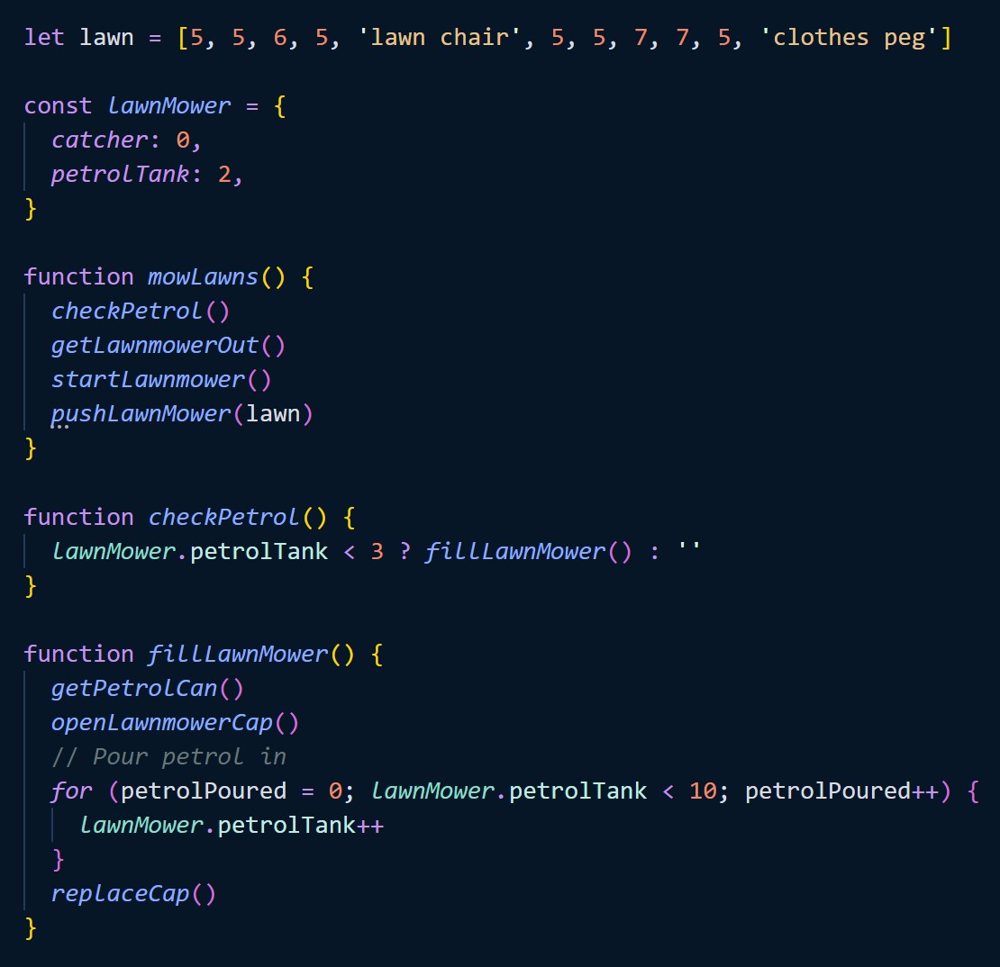
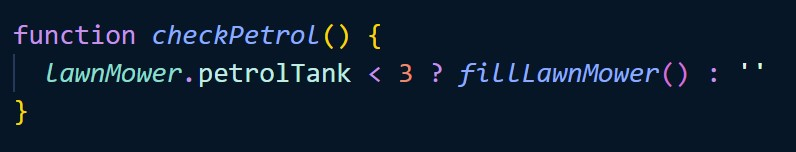
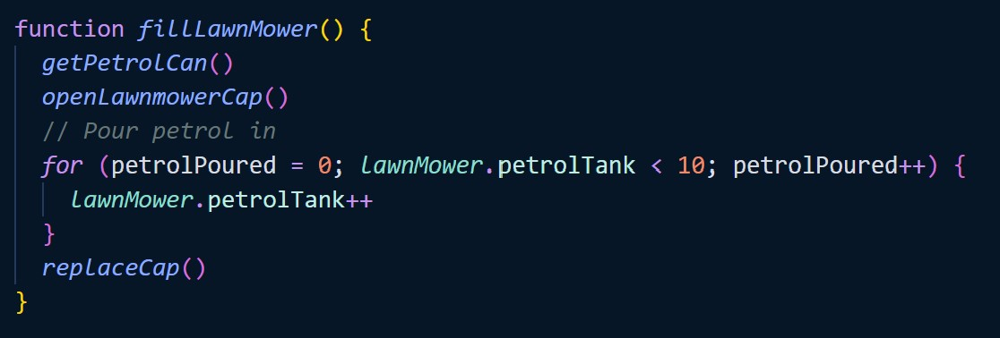
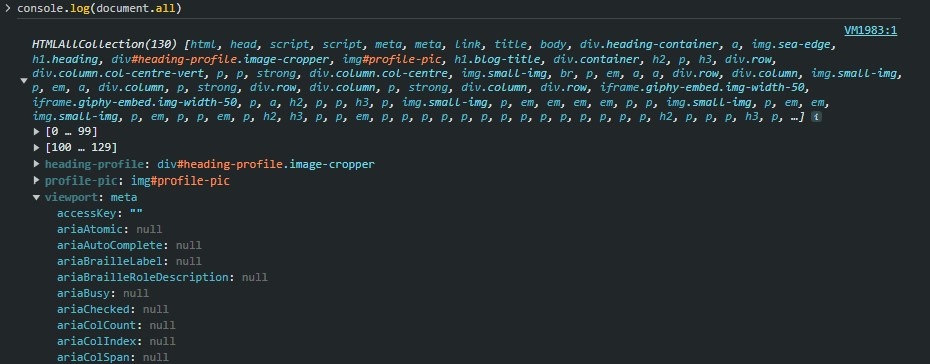

Andrew Molten's Blog

There are 3 languages of the web. HTML creates the structure and basic content of a web page, CSS adds the style, and JavaScript brings it to life.
HTML would be the chassis, the panels, the seats, the ignition, the buttons, the levers & the pedals.
(image: wallpapercave.com)
CSS would be all of the style on your car: the cushions, the fabric, the paint, the trim, the fonts & the shapes.
JavaScript would be the engine & programming that makes things happen when you start pushing an pulling buttons and levers. It opens the wing mirrors, starts the music, accelerates & brakes, pops up the lights & blinks the indicators.
When your JavaScript is executed there's a control flow which controls the order that the code is interpreted in.
While it does run from top to bottom, it’s very common that there will be some pieces of code which redirect the flow to run something else before continuing down the document.
When I get to the lawnmower I check the petrol, and if there isn’t enough petrol in there, it will take me out of the ordinary flow of mowing the lawns because I would then have to execute another “function” before the lawns can be done.
You can see that the checkPetrol() function is called before getLawnmowerOut() so the JS engine would jump over to run checkPetrol() before continuing through mowLawns.
In real life, filling up the lawn mower feels like it happens linearly, but because a script is written top to bottom it needs to jump around.
To change the flow the script uses many different control structures like if…else statements, conditionals, loops, & functions.
This ternary operator is a conditional which states: if (there’s not enough petrol) then {Fill it up}.Which would call fillLawnMower():
Which runs a couple of functions before running a for loop, which will start at 0, and keep repeating the function until it is no longer meeting the loop condition of: lawnMower.petrolTank < 10, at which point it exits the loop and continues running mowLawns()
There may even be lines of code waiting for events to trigger a function, for example:
While mowing the lawns, my wife might say “Can you give me a hand to lift this table?”, which is like pushing a button that pauses lawnmowing & starts a different helpfulHusband function.
All of this is to say, that while writing code, it's important to understand the control flow & loops that will affect the order that the code runs in.
Whenever you go to a webpage, the browser creates a DOM of that page.
I you know what an object in JavaScript is. That's essentially what the Document Object is. But the document object is built by the browser, it's huge, and includes everything that your webpage is made up of.
The DOM is what enables you to interact with the web page. When you click things, scroll, swipe, enter data or have any other interactions with the page, the DOM is what facilitates that. It allows programs & scripts to access & update the structure, style & content within a web page.
You can inspect the DOM using DevTools (ctrl+shift+i).
To see the document object in all its glory, within the DevTools console you can type “console.log(document.all)”.
You can also interact with the DOM from your JavaScript file in much the same way, by referencing “document.” and which part you want to access.
Which returns an array containing all the elements in the DOM with the class “myClassName”.

Which as it indicates by the “#” accesses the HTML element in the DOM with the id “getMeByMyId”. This “.onclick” method tells the document to “listen” for a click on this element, & when clicked runs “myFunction()”. Note that you don't use the brackets in the event listener because otherwise the function will be called immediately upon parsing.

A favourite of mine. After listening for anevent like a click, you can access the data from that event (the click) using “event.target”. To see what this gives you access to, add “console.log(”event.target”)” inside a function that gets called (i.e. “myFunction” from the example above), as long as when declaring the function you also put “event” within the () i.e. `myFunction(event) {
console.log(”event.target”)}. This is particularly helpful when you need information from the element being clicked to know which data to access with your JS.
Arrays & objects are a great way to store data, so how do you access that data when you need it?
The simplest way to access data from a specific position in an array is with:
Array[i]
Where i is the index of the array. I.e array[2] accesses pig from:
myArray = [dog, rabbit, pig, dinosaur]
Notice that in arrays you count from 0.
Dog 0
Rabbit 1
Pig 2
Dinosaur 3
There are also some array methods that you can use to manipulate the data in more complex ways.
The simple way to access data inside objects is to use the property name to reference the position the data is stored.
You can do this in two ways:
objectName.propertyName
Or
objectName[“propertyName”]
The first way being the simpler & tidier option. But the second way can be extremely useful. The reason that “propertyName” is contained within quotation marks here, is because you could also reference a variable inside of the [], which is incredibly handy as you can store received data from the DOM as a variable to then access an object property with that variable.
Functions are pieces of code that perform a set of coded actions.
You can build a function to do something over and over again, whenever you ask it too.
A bit like if you train your dog to sit, so when you say “sit”, that’s what your dog does.
But functions can also be much more complex than this, for example:
Say that you run a shop & have trained a staff member to “open up” in the morning, there are a set of instructions that they would follow to do that, which might look like this:
And calling the function would look like this:
As you can see, the “openUp” function contains 5 other functions which would all have their own set of instructions to perform their tasks. You can also then use any of those functions individually if you need to. After a power cut you might need to run “putMusicOn()” again because Spotify paused when the speaker disconnected.
These are helpful because they streamline your code. When you have multiple lines of code that are going to be needed more than once, if they’re written in a function then all you have to do is call that one function rather than copy 10 lines of code all over the place. This makes reading code much easier. It means less storage is taken in a program. And it makes the programmers life easier.
This is some test content